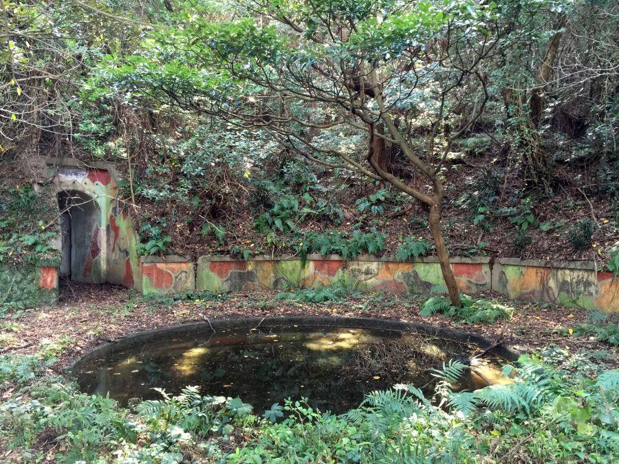

四国九州を結ぶ海の国道 < 国道九四フェリー / 愛媛県伊方町三崎・大分県大分市佐賀関 >
本州・九州と向き合う四国島。
本四連絡橋三本で結ばれる関西・中国地方とは異なり 四国⇔九州間には連絡橋がないため、その行き来は現在もフェリーが活躍しています。
いくつか運航されている九四ルートのうち、こちら「国道九四フェリー」は両者を最短・最速で結ぶ航路。名前に「国道」が付いているように、国道197号の海上区間を船舶接続によって担う、海上国道でもあります。
日本一長い半島の先端から、四国/九州を分ける海峡を通過して、大きな煙突がシンボルの港町へ。四国と九州を跨いでの船旅はいかがでしょうか。
日本一細長い佐田岬半島
九州へ向けて出港！
大分県の佐賀関港まで1時間10分の船旅です。
奥へ奥へ延々と続く陸地は佐田岬半島。フェリーが発着する三崎港から 半島の先端・佐田岬までは、ご覧の通り まだだいぶ距離があります。
日本一細長い、一見すると特異なロケーションに見える佐田岬半島ですが、これは中央構造線由来のもの。日本列島の屋台骨が露出した地形とも言えます。
岬先端部分を航行
船は岬の先端に差し掛かりました。
佐田岬観光の場合は、駐車場に自家用車を停めて 灯台へ徒歩20分の道のり。こうして見てみると 先端部分は結構なアップダウンがあることがわかります。そして遠い。
これ本当に20分で行けるの？
実際のところone way30分見ておいた方が良いです。
荒れる速吸の瀬戸
フェリーは佐田岬先端を過ぎて、豊予海峡に差し掛かりました。
豊後水道(ぶんごすいどう)... 四国と九州に挟まれた海全体
豊予海峡(ほうよかいきょう)... 豊後水道の最も狭い部分(約14km)
鳴門海峡と並んで、瀬戸内海の潮が入れ替わるのが こちらの海峡。平時から潮の流れが速く、海が荒れやすい危険な海域。船にあまり強くない方は、乗船したらすぐ横になる方が得策です。
反面、この潮通しの良さが「関サバ」「関アジ」と言った一級ブランド魚を育みます。
豊予海峡中央部を過ぎると やがて波が弱まり、九州はすぐそこです。
一番近い陸地は、関崎がある佐賀関半島。向こうの方から来ている白い船は同じ国道九四フェリー。三隻で運航しているため 必ずしも着発着発とはならず、三崎(愛媛)・佐賀関(大分)の出港時間には 若干ずれがあります。
半島の中でひときわ目立つ大きな煙突は...
東洋一と謳われた「関の大煙突」
「関の大煙突」
こと、
パンパシフィック・カッパー佐賀関製錬所(旧日本鉱業鉱佐賀関精錬所)の第二煙突。高さ約200mの大きな煙突は 晴れた日には四国からもよく見え、佐賀関を象徴する景色になっています。
こちらの煙突は二代目で、昭和47年(1972)の完成。
それより以前から存在した初代煙突は 大正5年(1916)の完成。操業当時は世界一の高さを誇りました。また、現煙突が完成してからもしばらくは 初代煙突は残され、二本の大煙突が立ち並ぶ風景を見ることができました。
それから時は流れ、初代煙突は完成から100年を超え 崩落の危険性があることから、平成24年(2012)に解体されました。

二代目大煙突と佐賀関半島(九州)ごしに 佐田岬半島(四国)が見えます。
国道九四フェリーの営業距離は31km。すぐそこだけれど どこか心理的な遠さが存在する、四国と九州。実際には1時間に一往復運航・所要1時間少々で行ける手軽さなのですが、それを実現している航路が 当航路になります。

三隻運航されているフェリーのうち、最も新しい船が「遊なぎ」
平成28年(2016)進水以来、四国と九州のヒト・モノを結ぶ役割を担っています。
国道九四フェリー 三崎営業所(三崎港)
< 自家用車 >
高松駅から 約3時間30分、243km
松山空港から 約1時間50分、92km
< 公共交通機関 >
松山市駅・八幡浜駅などから「三崎・八幡浜特急バス」あり
※ 主な地点からの最速・最短距離
関連記事
2017,10/27 四国最先端の岬は かつての軍事要塞 < 佐田岬・穹窖砲台 / 愛媛県 >
2017,10/31 砲台建造資材を陸揚げするために築かれた桟橋の 現在の姿 < 旧正野谷桟橋 / 愛媛県 >

2017,11/6 鮮やかな迷彩塗装が往時の姿を留める砲台跡 < 佐田岬第二砲台 / 愛媛県 >
2018,9/27 佐田岬燈台点灯100周年記念事業により、岬先端が再整備されました< 椿山展望台 / 愛媛県伊方町 >